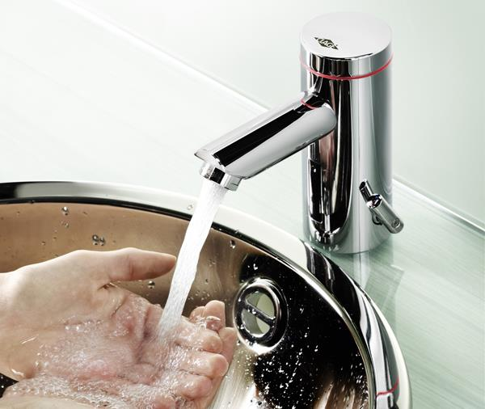

水喉更換/維修

水龍頭漏水維修/ 更換
家中無故滲漏、原因有不少、準確找出源頭才能真正解決問題！ 水喉滲漏 因為水喉存在壓力，所以比較危險，因老化產生一小點的裂縫，都可以令你短時間，水浸，如果漏到屋外。有一些案例甚至漏到電梯，要賠償可怕的數字。所以定期自行檢查，是不可以缺少的。 舊式採用的鐵喉管，會生銹，含鉛，生銹會產生重金屬，泥沙依附在鐵銹上，令喉管變水，出水量減小，產生黃泥水。鐵喉生銹甚至會斷開，所以看到自己家中有鐵喉管，請盡快更換,詳情價格請電聯。